SPENCER HARTLAND
Operations Specialist at Apple
EDUCATION
UC SAN DIEGO
COMPUTER SCIENCE
COMPUTER SCIENCE
CONTACT
spencerhartland@icloud.com
spencerhartland@apple.com
README
Hello, I'm Spencer. This is my personal website! I wrote the site
and designed all graphics, UI elements, and animations.
I've
worked in retail at Apple since 2019 when I moved to San Diego to
study Computer Science at UC San Diego. At Apple, I'm an Operations
Specialist so I deal with inventory management and back-of-house
operations.
Outside of work, my personal projects mix 3D
printing with custom hardware and software, with the goal of
learning about operating systems and the interaction of software
directly with hardware. Any other free time is devoted to video
games..
I have the most experience with Swift, which was
self-taught. HTML, CSS, JavaScript, C/C++, and Python are also
self-taught. I studied Java formally in both High School and
College. I feel confident in my ability to understand many
languages because I have an acute understanding of the fundamentals
of Computer Science/Programming.